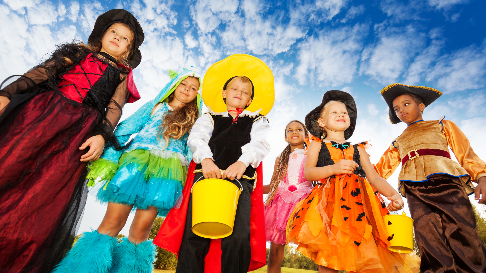
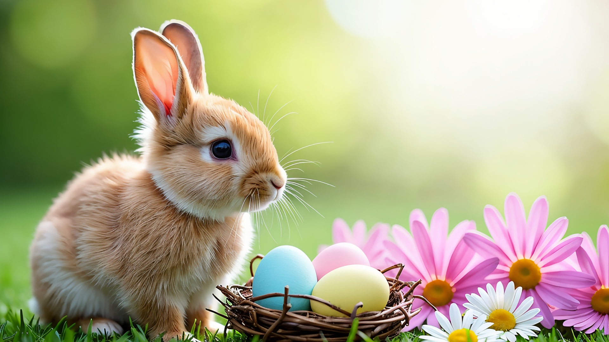
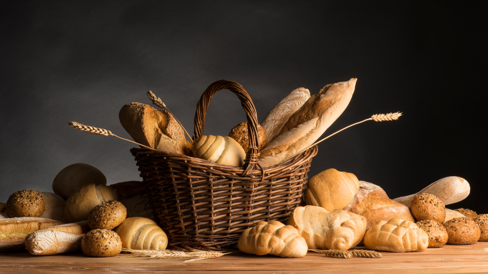

🎉 Magyar Ünnepek
A visual tour through the Hungarian year — from Mikulás to summer fireworks. Each celebration has a short bilingual story, plus a note on what to expect at school.
❄️ Tél (Winter)
Mikulás (St. Nicholas Day)
December 6-án van a Mikulás napja. Előző este a gyerekek kitisztított csizmát tesznek az ablakba vagy az ajtó elé. Ha jók voltak, a Mikulás csokival és apró ajándékokkal tölti meg a csizmát.
December 6th is St. Nicholas Day. The night before, children put a clean boot on their windowsill or by the door. If they've been good, Mikulás fills it with chocolate and small treats.
At school: In many schools, Mikulás visits the classroom in person!
Karácsony (Christmas)
Szenteste, december 24-én a családok együtt díszítik fel a karácsonyfát, és este együtt vacsoráznak. A hagyomány szerint az angyalka hozza az ajándékokat, amíg a gyerekek nem nézik. Amikor megcsörren egy csengő, itt az ideje kinyitni az ajándékokat!
On Christmas Eve, December 24th, families decorate the Christmas tree together and share a special dinner. According to tradition, a little angel (angyalka) brings the presents while the children aren't looking. When they hear a bell ring, it's time to open the gifts!
At school: Before the break, schools often hold a small class celebration or gift exchange.

Farsang (Carnival season)
A farsang a tél elűzésének ünnepe. Az iskolákban jelmezbált tartanak, ahol mindenki beöltözhet a kedvenc figurájának. A hagyományos farsangi étel a fánk — puha, cukros sütemény.
Farsang is a festival for chasing winter away. Schools hold costume parties where everyone can dress up as their favorite character. The traditional treat is fánk — a soft, sugared doughnut.
At school: It's worth asking the teacher in advance when the costume party will be, so there's time to pick an outfit.
🌱 Tavasz (Spring)

Húsvét (Easter)
Húsvétkor a fiúk hagyományosan meglocsolják a lányokat — ma inkább kölnivel, mint kútvízzel —, egy kis verset mondva. Cserébe a lányok festett tojást és süteményt adnak nekik. Ez egy vidám, régi magyar szokás.
At Easter, boys traditionally sprinkle girls with a little water — nowadays usually perfume instead — while saying a short rhyme. In return, girls give painted eggs and treats. It's a playful, centuries-old Hungarian tradition.
At school: Many classes paint eggs or learn a locsoló rhyme before the Easter break.
Anyák napja (Mother's Day)
Anyák napján a gyerekek verssel, virággal vagy saját kezűleg készített ajándékkal köszöntik édesanyjukat.
On Mother's Day, children thank their moms with a poem, flowers, or a handmade gift.
At school: Schools often prepare a small program or craft activity in the days leading up to it.
Gyermeknap (Children's Day)
Gyermeknapon minden a gyerekeké! Sok városban és iskolában játékos programokat, versenyeket, néha ingyenes fagyit is szerveznek erre a napra.
Children's Day is all about the kids! Many towns and schools organize games, competitions, and sometimes even free ice cream.
At school: There's often no regular teaching this day — just games and fun activities instead.
☀️ Nyár (Summer)

Augusztus 20. (State Foundation Day)
Augusztus 20. Magyarország egyik legfontosabb állami ünnepe. Ezen a napon ünneplik az új kenyeret, és esténként látványos tűzijátékot rendeznek szerte az országban.
August 20th is one of Hungary's most important national holidays. It celebrates the new bread of the harvest, and in the evening, fireworks light up the sky across the country.
At school: This falls during summer break, but it's often when people start talking about the new school year approaching.